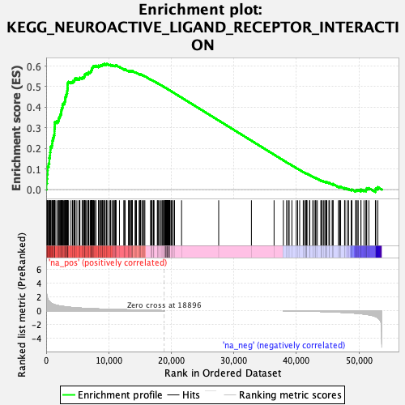
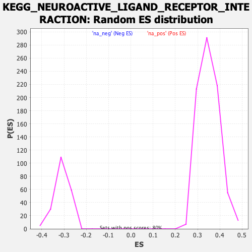

| | | Dataset | cond1.vs.cond2 |
| Phenotype | NoPhenotypeAvailable |
| Upregulated in class | na_pos |
| GeneSet | KEGG_NEUROACTIVE_LIGAND_RECEPTOR_INTERACTION |
| Enrichment Score (ES) | 0.61048484 |
| Normalized Enrichment Score (NES) | 1.7448629 |
| Nominal p-value | 0.0 |
| FDR q-value | 0.006390943 |
| FWER p-Value | 0.013 |
Table: GSEA Results Summary

Fig 1: Enrichment plot: KEGG_NEUROACTIVE_LIGAND_RECEPTOR_INTERACTION
Profile of the Running ES Score & Positions of GeneSet Members on the Rank Ordered List
| SYMBOL | RANK IN GENE LIST | RANK METRIC SCORE | RUNNING ES | CORE ENRICHMENT | | 1 | LPAR6 | 51 | 2.721 | 0.0300 | Yes |
| 2 | PTGER1 | 142 | 2.048 | 0.0517 | Yes |
| 3 | LEPR | 161 | 1.960 | 0.0737 | Yes |
| 4 | GRIN1 | 235 | 1.747 | 0.0922 | Yes |
| 5 | HTR4 | 245 | 1.703 | 0.1114 | Yes |
| 6 | S1PR4 | 386 | 1.465 | 0.1255 | Yes |
| 7 | GABRB3 | 501 | 1.346 | 0.1387 | Yes |
| 8 | GABRB1 | 502 | 1.345 | 0.1540 | Yes |
| 9 | GIPR | 606 | 1.250 | 0.1663 | Yes |
| 10 | NTSR1 | 621 | 1.224 | 0.1800 | Yes |
| 11 | HRH4 | 674 | 1.187 | 0.1925 | Yes |
| 12 | CHRM1 | 682 | 1.183 | 0.2059 | Yes |
| 13 | P2RX1 | 893 | 1.052 | 0.2139 | Yes |
| 14 | ADRB1 | 964 | 1.014 | 0.2241 | Yes |
| 15 | S1PR5 | 983 | 1.004 | 0.2352 | Yes |
| 16 | GRM7 | 1054 | 0.973 | 0.2450 | Yes |
| 17 | PTGFR | 1153 | 0.931 | 0.2538 | Yes |
| 18 | OPRL1 | 1208 | 0.913 | 0.2632 | Yes |
| 19 | TSHR | 1315 | 0.875 | 0.2711 | Yes |
| 20 | GRIA4 | 1320 | 0.874 | 0.2810 | Yes |
| 21 | PTGIR | 1324 | 0.873 | 0.2909 | Yes |
| 22 | GRIN3B | 1347 | 0.862 | 0.3003 | Yes |
| 23 | CALCRL | 1385 | 0.853 | 0.3093 | Yes |
| 24 | P2RY6 | 1393 | 0.851 | 0.3189 | Yes |
| 25 | GRIN3A | 1401 | 0.849 | 0.3284 | Yes |
| 26 | CHRNB4 | 1708 | 0.777 | 0.3316 | Yes |
| 27 | GABBR2 | 1942 | 0.733 | 0.3355 | Yes |
| 28 | GNRHR | 1982 | 0.727 | 0.3431 | Yes |
| 29 | CHRNA6 | 2063 | 0.712 | 0.3497 | Yes |
| 30 | GLP1R | 2170 | 0.693 | 0.3556 | Yes |
| 31 | LPAR3 | 2239 | 0.683 | 0.3621 | Yes |
| 32 | VIPR2 | 2332 | 0.668 | 0.3680 | Yes |
| 33 | MC1R | 2386 | 0.661 | 0.3745 | Yes |
| 34 | CNR1 | 2425 | 0.654 | 0.3813 | Yes |
| 35 | ADRB2 | 2451 | 0.650 | 0.3882 | Yes |
| 36 | UTS2R | 2497 | 0.644 | 0.3947 | Yes |
| 37 | P2RY13 | 2591 | 0.635 | 0.4002 | Yes |
| 38 | DRD4 | 2609 | 0.632 | 0.4071 | Yes |
| 39 | P2RY10 | 2623 | 0.631 | 0.4140 | Yes |
| 40 | GRPR | 2772 | 0.611 | 0.4182 | Yes |
| 41 | NPY2R | 2939 | 0.592 | 0.4218 | Yes |
| 42 | FPR2 | 2973 | 0.587 | 0.4279 | Yes |
| 43 | S1PR3 | 3012 | 0.584 | 0.4338 | Yes |
| 44 | GLRB | 3071 | 0.577 | 0.4393 | Yes |
| 45 | MTNR1A | 3080 | 0.576 | 0.4457 | Yes |
| 46 | CYSLTR1 | 3096 | 0.574 | 0.4520 | Yes |
| 47 | TRPV1 | 3227 | 0.561 | 0.4559 | Yes |
| 48 | GABBR1 | 3228 | 0.561 | 0.4623 | Yes |
| 49 | CRHR2 | 3290 | 0.554 | 0.4675 | Yes |
| 50 | HTR6 | 3356 | 0.547 | 0.4725 | Yes |
| 51 | GRIN2C | 3358 | 0.547 | 0.4787 | Yes |
| 52 | GRIN2A | 3386 | 0.543 | 0.4844 | Yes |
| 53 | P2RY1 | 3396 | 0.542 | 0.4904 | Yes |
| 54 | ADRA1B | 3412 | 0.541 | 0.4963 | Yes |
| 55 | CHRNA10 | 3422 | 0.540 | 0.5022 | Yes |
| 56 | LTB4R | 3423 | 0.540 | 0.5084 | Yes |
| 57 | ADRB3 | 3432 | 0.539 | 0.5144 | Yes |
| 58 | CYSLTR2 | 3478 | 0.533 | 0.5196 | Yes |
| 59 | NPY4R | 3591 | 0.520 | 0.5234 | Yes |
| 60 | P2RX6 | 3970 | 0.483 | 0.5219 | Yes |
| 61 | LPAR1 | 4206 | 0.463 | 0.5227 | Yes |
| 62 | BDKRB1 | 4263 | 0.458 | 0.5269 | Yes |
| 63 | GLRA2 | 4458 | 0.443 | 0.5283 | Yes |
| 64 | PTH1R | 4527 | 0.439 | 0.5320 | Yes |
| 65 | RXFP1 | 4587 | 0.435 | 0.5359 | Yes |
| 66 | GABRA1 | 4637 | 0.432 | 0.5399 | Yes |
| 67 | NTSR2 | 4915 | 0.412 | 0.5394 | Yes |
| 68 | HTR7 | 5256 | 0.389 | 0.5375 | Yes |
| 69 | EDNRB | 5332 | 0.384 | 0.5404 | Yes |
| 70 | TBXA2R | 5398 | 0.380 | 0.5435 | Yes |
| 71 | GRM1 | 5752 | 0.363 | 0.5411 | Yes |
| 72 | GZMA | 5781 | 0.361 | 0.5446 | Yes |
| 73 | NR3C1 | 5956 | 0.353 | 0.5454 | Yes |
| 74 | TACR2 | 6083 | 0.347 | 0.5470 | Yes |
| 75 | MCHR1 | 6101 | 0.345 | 0.5506 | Yes |
| 76 | CHRM4 | 6120 | 0.344 | 0.5542 | Yes |
| 77 | NMBR | 6137 | 0.343 | 0.5578 | Yes |
| 78 | APLNR | 6209 | 0.341 | 0.5603 | Yes |
| 79 | NPFFR2 | 6316 | 0.335 | 0.5622 | Yes |
| 80 | CHRNE | 6446 | 0.330 | 0.5635 | Yes |
| 81 | GLRA3 | 6698 | 0.318 | 0.5624 | Yes |
| 82 | AVPR2 | 6713 | 0.317 | 0.5658 | Yes |
| 83 | TSHB | 6804 | 0.312 | 0.5677 | Yes |
| 84 | ADRA1D | 6823 | 0.311 | 0.5709 | Yes |
| 85 | LPAR4 | 7037 | 0.300 | 0.5703 | Yes |
| 86 | CHRNB1 | 7102 | 0.296 | 0.5725 | Yes |
| 87 | HRH1 | 7191 | 0.292 | 0.5741 | Yes |
| 88 | HTR1B | 7195 | 0.292 | 0.5774 | Yes |
| 89 | PRLHR | 7242 | 0.290 | 0.5798 | Yes |
| 90 | GRID2 | 7297 | 0.287 | 0.5821 | Yes |
| 91 | THRB | 7306 | 0.286 | 0.5852 | Yes |
| 92 | CRHR1 | 7337 | 0.285 | 0.5879 | Yes |
| 93 | ADCYAP1R1 | 7377 | 0.284 | 0.5904 | Yes |
| 94 | P2RY14 | 7389 | 0.283 | 0.5934 | Yes |
| 95 | GRIA1 | 7498 | 0.279 | 0.5946 | Yes |
| 96 | GHSR | 7557 | 0.277 | 0.5966 | Yes |
| 97 | C5AR1 | 7566 | 0.277 | 0.5996 | Yes |
| 98 | CHRNA2 | 7710 | 0.272 | 0.6001 | Yes |
| 99 | PTGER4 | 7915 | 0.268 | 0.5993 | Yes |
| 100 | GABRA2 | 7955 | 0.266 | 0.6016 | Yes |
| 101 | HRH3 | 8356 | 0.253 | 0.5970 | Yes |
| 102 | MAS1 | 8391 | 0.251 | 0.5992 | Yes |
| 103 | HTR2A | 8394 | 0.251 | 0.6020 | Yes |
| 104 | OPRM1 | 8608 | 0.242 | 0.6008 | Yes |
| 105 | MC4R | 8650 | 0.241 | 0.6028 | Yes |
| 106 | GLP2R | 8797 | 0.235 | 0.6027 | Yes |
| 107 | PLG | 8936 | 0.229 | 0.6027 | Yes |
| 108 | GABRR2 | 8954 | 0.228 | 0.6050 | Yes |
| 109 | GCGR | 9025 | 0.225 | 0.6062 | Yes |
| 110 | ADORA2B | 9050 | 0.224 | 0.6084 | Yes |
| 111 | CGA | 9227 | 0.220 | 0.6076 | Yes |
| 112 | NMUR1 | 9311 | 0.217 | 0.6085 | Yes |
| 113 | PRL | 9336 | 0.216 | 0.6105 | Yes |
| 114 | NPBWR1 | 9600 | 0.206 | 0.6079 | No |
| 115 | GHR | 9670 | 0.203 | 0.6089 | No |
| 116 | GRIK4 | 9726 | 0.201 | 0.6102 | No |
| 117 | SSTR3 | 10072 | 0.192 | 0.6059 | No |
| 118 | GPR83 | 10253 | 0.187 | 0.6047 | No |
| 119 | P2RY8 | 10295 | 0.185 | 0.6060 | No |
| 120 | CTSG | 10517 | 0.178 | 0.6039 | No |
| 121 | GRM8 | 10728 | 0.170 | 0.6019 | No |
| 122 | ADORA2A | 10851 | 0.166 | 0.6015 | No |
| 123 | TRHR | 10989 | 0.161 | 0.6008 | No |
| 124 | KISS1R | 11054 | 0.159 | 0.6014 | No |
| 125 | GPR156 | 11071 | 0.158 | 0.6029 | No |
| 126 | P2RY2 | 11137 | 0.156 | 0.6034 | No |
| 127 | P2RX7 | 11184 | 0.154 | 0.6043 | No |
| 128 | LHCGR | 11717 | 0.146 | 0.5960 | No |
| 129 | MTNR1B | 12438 | 0.146 | 0.5842 | No |
| 130 | GABRA5 | 12445 | 0.146 | 0.5857 | No |
| 131 | FSHR | 12631 | 0.142 | 0.5839 | No |
| 132 | GABRG1 | 13184 | 0.142 | 0.5752 | No |
| 133 | HTR5A | 13186 | 0.142 | 0.5768 | No |
| 134 | BDKRB2 | 13336 | 0.138 | 0.5756 | No |
| 135 | F2RL3 | 13402 | 0.136 | 0.5759 | No |
| 136 | P2RX4 | 13611 | 0.129 | 0.5735 | No |
| 137 | AVPR1A | 13631 | 0.128 | 0.5746 | No |
| 138 | HTR1E | 13736 | 0.125 | 0.5741 | No |
| 139 | GRM2 | 13753 | 0.125 | 0.5752 | No |
| 140 | PTAFR | 13772 | 0.124 | 0.5763 | No |
| 141 | GRIA2 | 14219 | 0.110 | 0.5691 | No |
| 142 | CHRM5 | 14296 | 0.108 | 0.5690 | No |
| 143 | P2RY4 | 14439 | 0.103 | 0.5675 | No |
| 144 | SCTR | 14863 | 0.090 | 0.5606 | No |
| 145 | ADRA2B | 15001 | 0.087 | 0.5590 | No |
| 146 | DRD1 | 15020 | 0.087 | 0.5596 | No |
| 147 | HCRTR1 | 15077 | 0.085 | 0.5596 | No |
| 148 | TSPO | 15113 | 0.083 | 0.5599 | No |
| 149 | C3AR1 | 15332 | 0.077 | 0.5567 | No |
| 150 | GABRG3 | 15531 | 0.071 | 0.5538 | No |
| 151 | GABRQ | 15655 | 0.068 | 0.5522 | No |
| 152 | MC5R | 15782 | 0.065 | 0.5506 | No |
| 153 | GRIN2D | 16716 | 0.045 | 0.5336 | No |
| 154 | SSTR1 | 16725 | 0.044 | 0.5340 | No |
| 155 | MLNR | 16909 | 0.041 | 0.5310 | No |
| 156 | MC2R | 16938 | 0.041 | 0.5310 | No |
| 157 | CHRNA9 | 17170 | 0.038 | 0.5271 | No |
| 158 | PTGDR | 17206 | 0.037 | 0.5268 | No |
| 159 | HTR1F | 17225 | 0.037 | 0.5269 | No |
| 160 | NPY5R | 17773 | 0.031 | 0.5170 | No |
| 161 | LTB4R2 | 17855 | 0.028 | 0.5158 | No |
| 162 | EDNRA | 17894 | 0.027 | 0.5154 | No |
| 163 | SSTR2 | 18068 | 0.022 | 0.5124 | No |
| 164 | P2RX3 | 18326 | 0.015 | 0.5078 | No |
| 165 | AGTR2 | 18512 | 0.010 | 0.5044 | No |
| 166 | LHB | 18632 | 0.007 | 0.5023 | No |
| 167 | P2RX2 | 18665 | 0.006 | 0.5018 | No |
| 168 | GRIK2 | 18777 | 0.003 | 0.4997 | No |
| 169 | GABRA3 | 18924 | 0.000 | 0.4970 | No |
| 170 | PTGER3 | 18944 | 0.000 | 0.4966 | No |
| 171 | CHRNA3 | 18987 | 0.000 | 0.4958 | No |
| 172 | GABRP | 19003 | 0.000 | 0.4956 | No |
| 173 | GRIK5 | 19068 | 0.000 | 0.4944 | No |
| 174 | GHRHR | 19073 | 0.000 | 0.4943 | No |
| 175 | GABRA4 | 19102 | 0.000 | 0.4938 | No |
| 176 | GABRG2 | 19128 | 0.000 | 0.4933 | No |
| 177 | TACR1 | 19132 | 0.000 | 0.4932 | No |
| 178 | OPRD1 | 19143 | 0.000 | 0.4930 | No |
| 179 | GRM4 | 19209 | 0.000 | 0.4918 | No |
| 180 | PTGER2 | 19221 | 0.000 | 0.4916 | No |
| 181 | NPBWR2 | 19223 | 0.000 | 0.4916 | No |
| 182 | FSHB | 19295 | 0.000 | 0.4903 | No |
| 183 | SSTR4 | 19305 | 0.000 | 0.4901 | No |
| 184 | TAAR5 | 19337 | 0.000 | 0.4895 | No |
| 185 | CHRND | 19338 | 0.000 | 0.4895 | No |
| 186 | HTR2B | 19340 | 0.000 | 0.4895 | No |
| 187 | GH2 | 19349 | 0.000 | 0.4894 | No |
| 188 | CSH1 | 19350 | 0.000 | 0.4894 | No |
| 189 | AGTR1 | 19427 | 0.000 | 0.4879 | No |
| 190 | GABRA6 | 19436 | 0.000 | 0.4878 | No |
| 191 | GABRB2 | 19437 | 0.000 | 0.4878 | No |
| 192 | GABRR1 | 19441 | 0.000 | 0.4877 | No |
| 193 | TAAR2 | 19444 | 0.000 | 0.4877 | No |
| 194 | TAAR8 | 19445 | 0.000 | 0.4877 | No |
| 195 | HTR2C | 19449 | 0.000 | 0.4876 | No |
| 196 | CCKAR | 19594 | 0.000 | 0.4849 | No |
| 197 | GRIK3 | 19609 | 0.000 | 0.4847 | No |
| 198 | GALR1 | 19664 | 0.000 | 0.4837 | No |
| 199 | DRD5 | 19740 | 0.000 | 0.4823 | No |
| 200 | TACR3 | 19751 | 0.000 | 0.4821 | No |
| 201 | S1PR1 | 19780 | 0.000 | 0.4815 | No |
| 202 | FPR1 | 19782 | 0.000 | 0.4815 | No |
| 203 | GRIK1 | 19788 | 0.000 | 0.4814 | No |
| 204 | HTR1A | 20028 | 0.000 | 0.4770 | No |
| 205 | CHRM2 | 20107 | 0.000 | 0.4755 | No |
| 206 | GALR2 | 20178 | 0.000 | 0.4742 | No |
| 207 | CNR2 | 20457 | 0.000 | 0.4690 | No |
| 208 | CHRNG | 20527 | 0.000 | 0.4677 | No |
| 209 | PRSS1 | 21651 | 0.000 | 0.4467 | No |
| 210 | TAAR9 | 27585 | 0.000 | 0.3355 | No |
| 211 | GH1 | 32818 | 0.000 | 0.2375 | No |
| 212 | PRSS2 | 36442 | 0.000 | 0.1696 | No |
| 213 | ADRA1A | 37926 | -0.001 | 0.1419 | No |
| 214 | HRH2 | 38437 | -0.014 | 0.1325 | No |
| 215 | GRIA3 | 38698 | -0.021 | 0.1279 | No |
| 216 | GRM3 | 38856 | -0.025 | 0.1252 | No |
| 217 | RXFP2 | 39287 | -0.026 | 0.1174 | No |
| 218 | GLRA1 | 39987 | -0.034 | 0.1047 | No |
| 219 | BRS3 | 40215 | -0.034 | 0.1009 | No |
| 220 | DRD3 | 40531 | -0.034 | 0.0954 | No |
| 221 | GABRD | 41107 | -0.037 | 0.0850 | No |
| 222 | MCHR2 | 41293 | -0.041 | 0.0820 | No |
| 223 | LPAR2 | 41542 | -0.048 | 0.0779 | No |
| 224 | P2RY11 | 41567 | -0.048 | 0.0780 | No |
| 225 | GALR3 | 41576 | -0.049 | 0.0784 | No |
| 226 | PTH2R | 41679 | -0.052 | 0.0771 | No |
| 227 | VIPR1 | 41692 | -0.052 | 0.0775 | No |
| 228 | PRSS3 | 42108 | -0.063 | 0.0704 | No |
| 229 | GPR50 | 42152 | -0.064 | 0.0704 | No |
| 230 | GRIN2B | 42613 | -0.078 | 0.0626 | No |
| 231 | GRM6 | 42866 | -0.086 | 0.0589 | No |
| 232 | TAAR6 | 43082 | -0.090 | 0.0559 | No |
| 233 | HCRTR2 | 43125 | -0.090 | 0.0561 | No |
| 234 | NMUR2 | 43355 | -0.099 | 0.0530 | No |
| 235 | ADRA2C | 43918 | -0.115 | 0.0437 | No |
| 236 | MC3R | 43998 | -0.118 | 0.0436 | No |
| 237 | ADRA2A | 44144 | -0.119 | 0.0422 | No |
| 238 | CALCR | 44380 | -0.127 | 0.0393 | No |
| 239 | F2R | 44559 | -0.133 | 0.0375 | No |
| 240 | NPY1R | 44738 | -0.139 | 0.0357 | No |
| 241 | TAAR1 | 44769 | -0.140 | 0.0368 | No |
| 242 | CHRNA4 | 44881 | -0.143 | 0.0363 | No |
| 243 | FPR3 | 45209 | -0.152 | 0.0319 | No |
| 244 | OPRK1 | 45306 | -0.157 | 0.0319 | No |
| 245 | S1PR2 | 45726 | -0.171 | 0.0260 | No |
| 246 | F2 | 45845 | -0.175 | 0.0258 | No |
| 247 | GRM5 | 45875 | -0.177 | 0.0273 | No |
| 248 | AVPR1B | 46732 | -0.213 | 0.0136 | No |
| 249 | GRID1 | 46908 | -0.221 | 0.0129 | No |
| 250 | LEP | 46952 | -0.223 | 0.0146 | No |
| 251 | SSTR5 | 47084 | -0.229 | 0.0148 | No |
| 252 | CHRNA7 | 47716 | -0.255 | 0.0059 | No |
| 253 | NPFFR1 | 47787 | -0.259 | 0.0075 | No |
| 254 | CCKBR | 48153 | -0.277 | 0.0038 | No |
| 255 | CHRNB3 | 48364 | -0.288 | 0.0032 | No |
| 256 | CHRNB2 | 48779 | -0.315 | -0.0010 | No |
| 257 | F2RL2 | 48890 | -0.322 | 0.0006 | No |
| 258 | THRA | 49486 | -0.363 | -0.0064 | No |
| 259 | CHRNA5 | 49553 | -0.368 | -0.0035 | No |
| 260 | ADORA1 | 49736 | -0.383 | -0.0025 | No |
| 261 | PARD3 | 49894 | -0.393 | -0.0010 | No |
| 262 | F2RL1 | 50319 | -0.432 | -0.0040 | No |
| 263 | CHRNA1 | 50338 | -0.434 | 0.0006 | No |
| 264 | GABRE | 50819 | -0.485 | -0.0029 | No |
| 265 | OXTR | 51127 | -0.523 | -0.0027 | No |
| 266 | GPR35 | 51191 | -0.532 | 0.0022 | No |
| 267 | CHRM3 | 51260 | -0.539 | 0.0071 | No |
| 268 | PRLR | 51609 | -0.590 | 0.0073 | No |
| 269 | DRD2 | 52643 | -0.838 | -0.0025 | No |
| 270 | P2RX5 | 52715 | -0.864 | 0.0060 | No |
| 271 | HTR1D | 53034 | -1.022 | 0.0117 | No |
Table: GSEA details [plain text format]

Fig 2: KEGG_NEUROACTIVE_LIGAND_RECEPTOR_INTERACTION: Random ES distribution
Gene set null distribution of ES for KEGG_NEUROACTIVE_LIGAND_RECEPTOR_INTERACTION